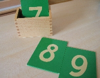
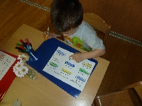
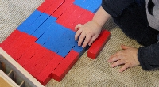

Materiel
Matériel de mathématiques
« L’enfant est doué d’un esprit mathématique inné », disait Maria Montessori, dont il fait preuve très jeune par son besoin de logique et de classement, auquel répond le matériel sensoriel en lui permettant de reconstituer des séries logiques.
Dés le début de sa vie, l’enfant absorbe des impressions et les enregistre grâce au travail de l’esprit absorbant. Mais il n’est pas suffisant de percevoir et de mémoriser ces impressions : l’enfant doit utiliser ces informations afin de construire son intelligence et son esprit va commencer par discerner les éléments, puis faire des connexions en trouvant des similarités et des différences.
Le langage va aider à la classification selon des catégories par la création de concepts. En cela, l’enfant accède à l’abstraction.
L’esprit mathématique est donc la capacité qu’a l’enfant d’organiser, de classifier, de sérier et de quantifier son vécu.


